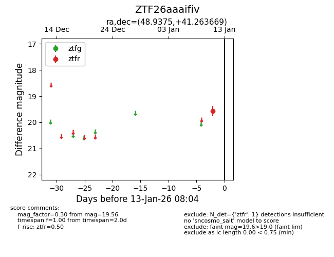
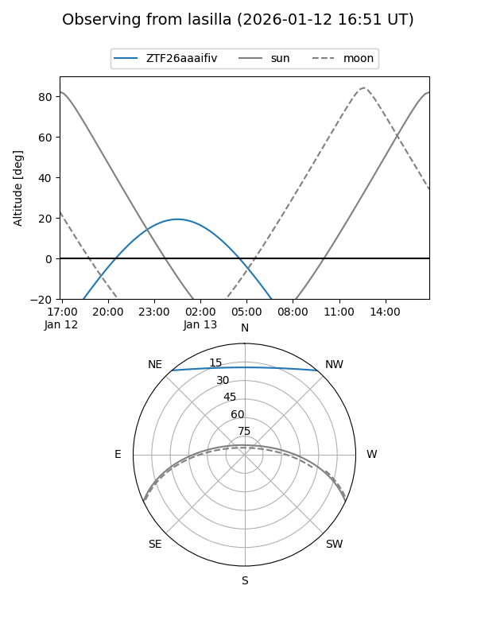
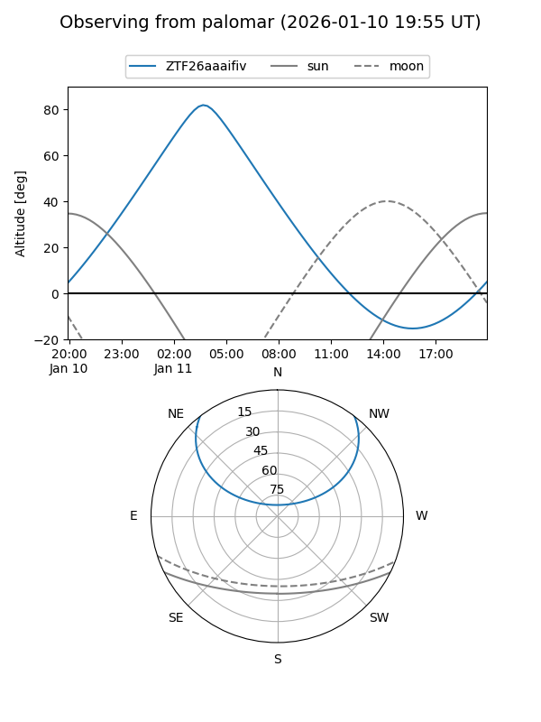

ZTF26aaaifiv
Target ZTF26aaaifiv at 2026-01-13 08:05
Aliases and brokers:
FINK: link
Lasair: link
ALeRCE: link
alt names
ZTF26aaaifiv (ztf,fink_ztf)
Coordinates:
equatorial (ra, dec) = 48.9375,+41.26367
equatorial (HMS+DMS) = 03:15:44.99,+41:15:49.21
galactic (l, b) = (150.0597,-13.88385)
Flags:
Photometry:
last ztfr=19.56
1 ztfr detections
Lightcurve

Visibility


Additional plots